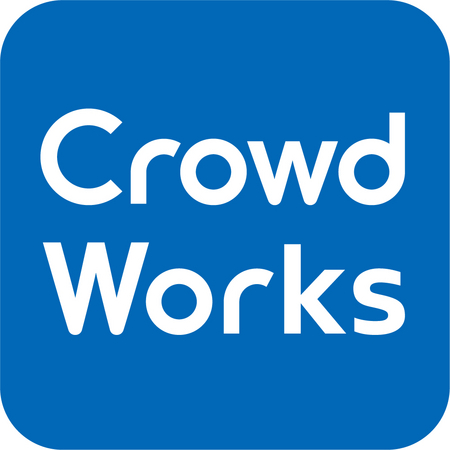

Taiga Mikami
Chiba University工学部 情報画像学科4年
工学部 情報画像学科4年
2016年 松江高専 情報工学科 卒業
松江高専ではDeep LearningのフレームワークであるChainerを用いて農作物の土壌水分量を予測する研究を行った.2016年 千葉大学 情報画像学科 入学
千葉大学では色覚・色彩・物の見え方に興味を持ち視覚系の研究室に所属している. ポートフォリオで紹介してある作品はカンファレンス・コンテストなどで発表し，企業などからフィードバックなどをもらい，改善点を考えている． 株式会社クラウドワークス
長期インターン 株式会社ビズリーチ
株式会社ビズリーチ
 イタンジ株式会社
イタンジ株式会社
 株式会社ドリーム・アーツ
株式会社ドリーム・アーツ
株式会社パソナテック
サマーインターン基本情報技術者
キャリアインカレ/NRIビジネスコンテスト 優勝
Gurunavi Idea Lab 2017 Winter 優勝